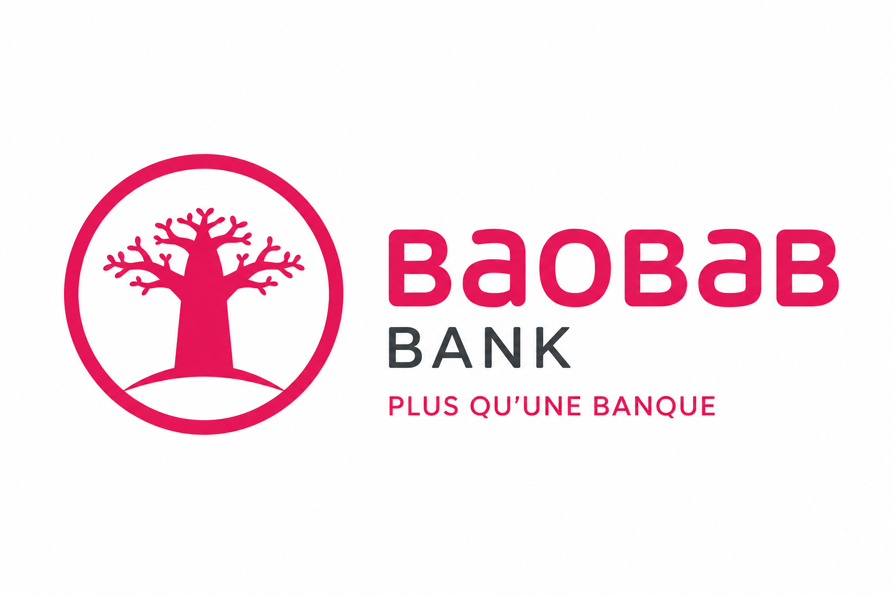
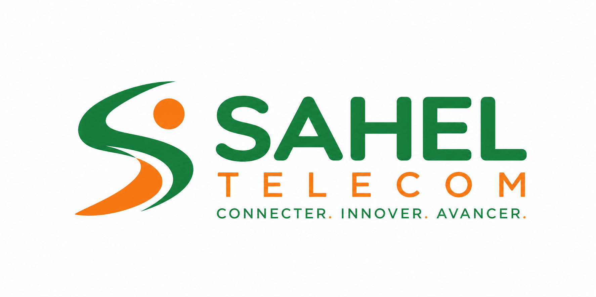
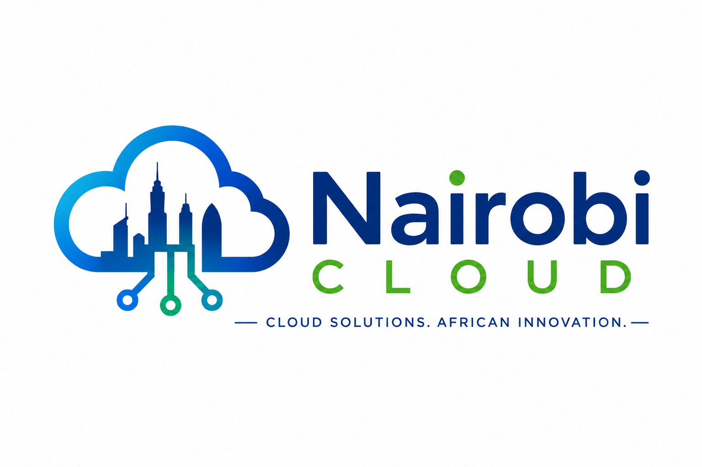
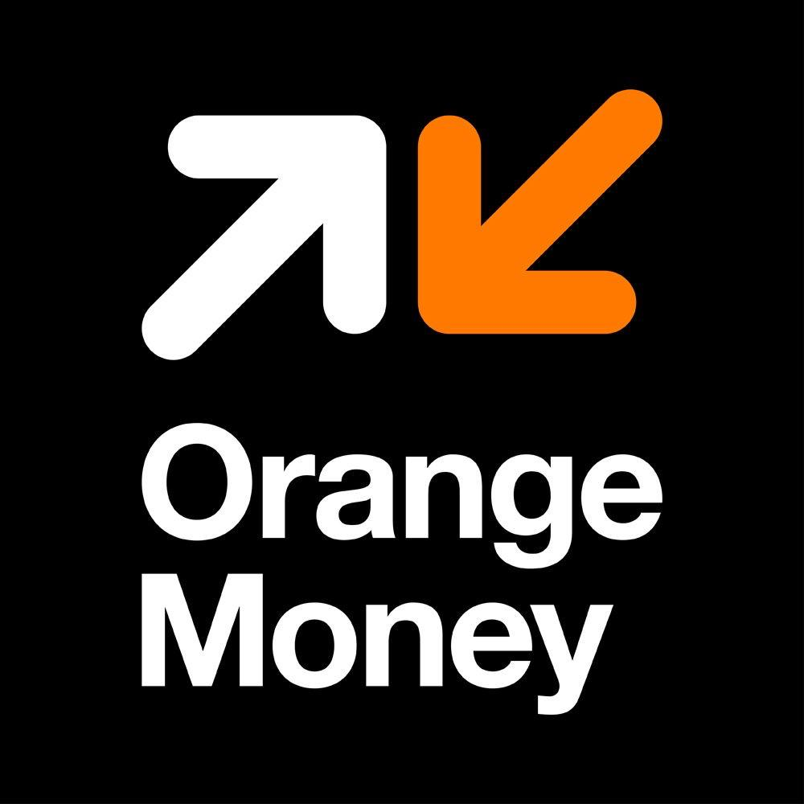

0
Participants attendus
17 — 19 février 2027 · Kigali, Rwanda
Le sommet panafricain qui réunit bâtisseurs, décideurs et investisseurs autour d'un objectif commun : accélérer une Afrique connectée, numérique et souveraine.
En chiffres
0
Participants attendus
0
Intervenants experts
0
Jours de sommet
0
Pays représentés
Pourquoi participer
Rencontrez des fondateurs, investisseurs et décideurs venus de 12 pays autour de rendez-vous ciblés et de moments informels pensés pour créer de vraies connexions.
Assistez aux annonces de financement, aux démonstrations produit et aux tables rondes qui dessinent la prochaine décennie de la tech africaine.
Des formations concrètes animées par des praticiens : financement, scalabilité, cybersécurité et expansion régionale.
Intervenants vedettes
Directrice Innovation, TechSahel
Sénégal
Fondateur, PayLink Africa
Ghana
Associée, Atlas Ventures
Maroc
CTO, Ubuntu Cloud
Afrique du Sud
Nos partenaires
Partenaire Or

Partenaires Argent

Partenaires Bronze

